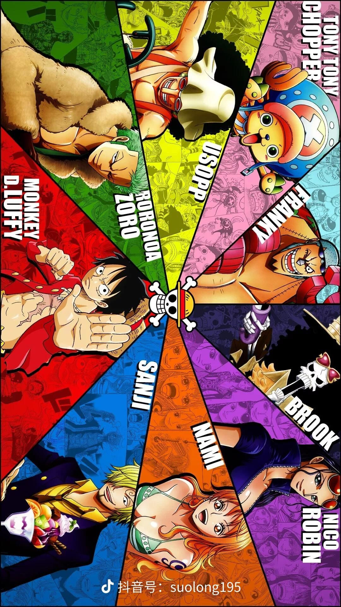

Sanji
Sanji
The fourth partner to join, as a chef, and his kicking skills are very powerful, known as Blackfoot, Luffy and others meet at the Sea Restaurant, and officially join after finally defeating the overlord of the East Sea, dreaming of seeing the legendary ALL BLUE with their own eyes.
Sanji is the only one in the Straw Hat who can smoke, and he is still an old smoker, and he usually lights his cigarettes with lighters or matches! Although it is also handsome, it is not special enough! He had a special way of lighting cigarettes, very domineering, and he was also very sexy, I remember once seeing a beautiful woman vomiting blood directly and almost died.
Devil Fruit and Introduction: Good at using kicking skills, the most powerful skill at present is Demon Wind Foot: By rotating at high speed, the foot produces high temperature and turns crimson, and then the speed of kicking out will be faster, and even the enemy's bones can be burned when kicking at the target, and the power is as powerful as a demon. The powerful kick generated by the heat can easily break through even the iron block, and Yamaji is as powerful as a demon.
Roronoa Solon – Zoro
Roronoa Solon – Zoro
Luffy's first partner. The swordsman of the Three Swords Stream was once a pirate hunter who terrified pirates. Because he pursues his dream of becoming the world's number one swordsman, he and Luffy go on a search for the great treasure of navigation.
Devil Fruit and Introduction: One Piece Sauron's possible hidden ability, the future final battle outbreak strength will surely shock the audience! is Luffy's most important combatant, not one of them. Solon's position in the Straw Hat Pirates is absolutely irreplaceable, it has been 5 or 6 years since he returned two years later, and he has not met his opponent! Even the strongest strength has not had a chance to show.
Captain: Monchi S. D. Luffy
Captain: Monchi S. D. Luffy
Devil Fruit and Introduction: Devil Fruit Luffy is a superhuman "rubber fruit" ability, with a rubber physique all over his body, and Luffy uses this physique in battle, and upgrades his moves in constant battles. Luffy's first fruit characteristics: can extend and rebound any part of the body, including internal organs, blood vessels, and teeth, according to its own will, making seemingly ordinary blows more powerful. Because the body turns into rubber, there is no need to worry about the hit limb being injured by the reaction force. The body turned into rubber has excellent elasticity and ductility. The distance that can be contracted is directly proportional to the strength of the person with the ability itself. Most physical attacks ( except for domineering or fist attacks ) will bounce back or be completely ineffective when hitting the rubber person's body, and small bullets or ordinary cannonballs can also bounce back when hit by the body. In addition, the body of rubber cannot conduct electricity, so Raiden's moves are ineffective against him. Fruit Weaknesses: Slash, Slash, High Heat, and Low Temperature Attacks.
